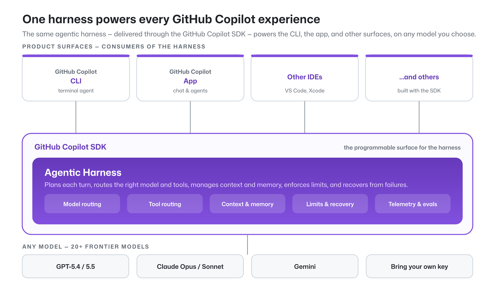
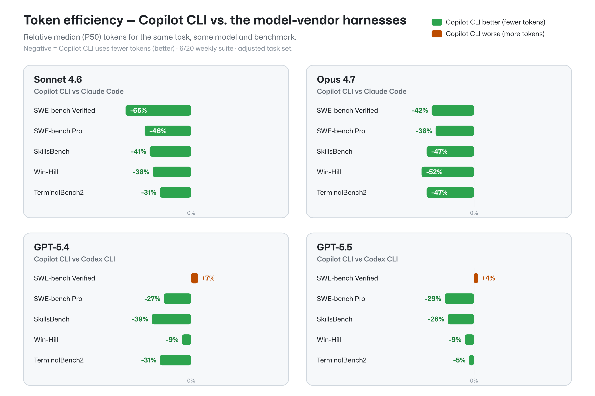
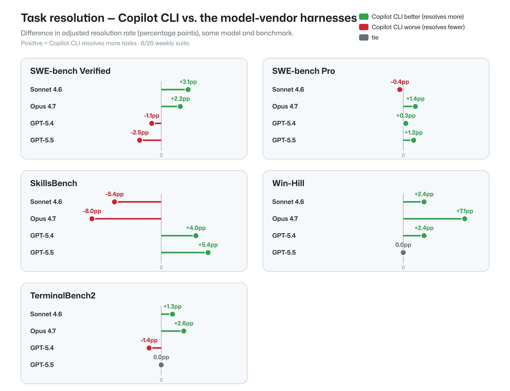
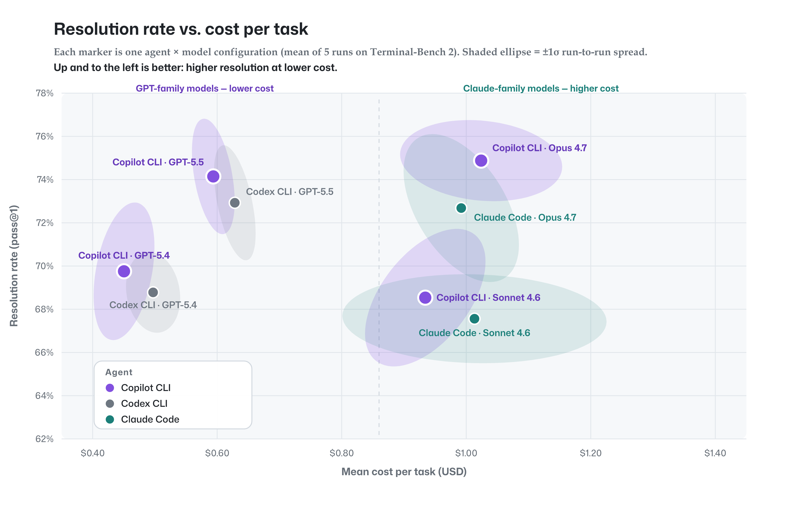

完成率持平
多项基准上，与模型厂商自家框架的任务完成率相当，差异落在随机波动范围内。
更省 token
大多数配置下消耗更少 token，Claude 系列单任务最高节省 65%。
不锁定模型
一套框架支持 20+ 前沿模型，可按任务切换或交给 Auto 自动选择。
同样的任务完成度，更低的 token 成本，同时保留为每个任务挑选最合适模型的自由。
GITHUB BLOG · 2026.06.25
同模型、同任务下，跨多个基准衡量任务完成率与 token 消耗——并保留 20+ 模型的选择自由
Shibani Basava & Carlos Castro · agentic harness
核心结论
多项基准上，与模型厂商自家框架的任务完成率相当，差异落在随机波动范围内。
大多数配置下消耗更少 token，Claude 系列单任务最高节省 65%。
一套框架支持 20+ 前沿模型，可按任务切换或交给 Auto 自动选择。
同样的任务完成度，更低的 token 成本，同时保留为每个任务挑选最合适模型的自由。
PART 01
agentic harness 的定位，与控制变量的基准方法
定义
它是编排层——负责管理工具、上下文与工作流，独立于底层模型之外。
模型负责“思考”，框架负责把每一轮的工具调用、上下文与记忆、限额与失败恢复编排起来。换模型，框架不变。
同一套框架，驱动 Copilot CLI、App、code review，以及 GitHub 与 Microsoft 的多处体验。
架构

框架经由 Copilot SDK 对外，承担上述五件事；模型可换，上层 CLI / App / IDE 体验不变。
方法
把 Copilot 框架与厂商自家框架放在同一条件下对比：
尽可能控制每一个变量，让对比只反映框架本身的差异。
评测范围
Copilot CLI 对比——
| 基准 | 考察什么 |
|---|---|
| SWE-bench Verified | 500 个人工校验的开源 Python 修 bug 任务（行业标准） |
| SWE-bench Pro | 更难的多步工程任务 |
| SkillsBench | 技能调用与任务解决（扩展性） |
| TerminalBench 2 | 终端 / 命令行工作流 |
| Win-Hill | 内部 Windows 容器任务（环境泛化） |
PART 02
token 效率 · 任务完成率 · 成本与方差
token 效率

条形为同一任务、同一模型下 token 中位数（P50）的相对差异；负值＝Copilot 更省。
任务完成率

数值为完成率差异（百分点 pp）；正值＝Copilot 完成更多任务。
完成率持平 ⟶ 底层模型的全部潜力得以释放。
TerminalBench 2

紫色 Copilot CLI 点完成率不落后、成本不更高。
每个配置≥5 次运行，椭圆为 ±1σ；越小越可复现。
GPT 成本最低、性价比高；Opus 完成率最高但更贵——都能选。
PART 03
一套框架，多种模型
灵活性
支持开源与本地模型；可按任务手动选择，或交给 Auto 自动挑选最合适的模型。
让一个模型家族去评审另一个家族的产出——把单模型做不到的纠错，变成框架自带的能力，结果优于任一单模型。
结论
GitHub Copilot 在多项配置下以更少 token 拿到与领先厂商框架相当的任务完成度，且凭借多模型架构，不把你锁死在单一模型上。
方法论
动手试试
终端里的智能体
对话与智能体
把框架编进你的工具
同一套 agentic harness 驱动以上全部体验——在你的环境里对比模型与策略。